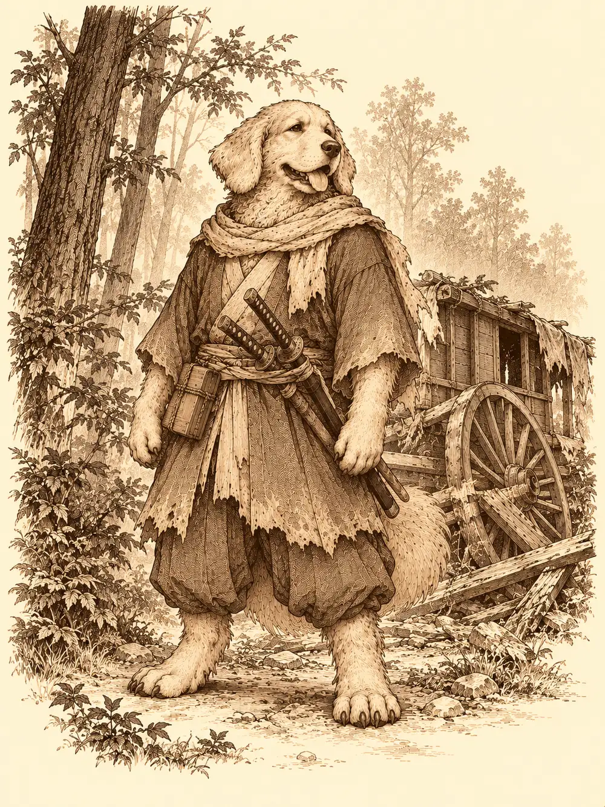

Capítulo 20
Un viaje movidito
Libro II · El favor del shogun
La sobremesa se alargaba en la base. Eran las tres de la tarde, había restos de arroz en los cuencos y un olor tibio a té, y Sirth daba cabezadas en su silla, intentando mantenerse despierto y perdiendo la batalla a cada parpadeo. Alguien le acercó un cojín para que al menos no se desnucara.
Alguien tenía otras ideas. Fue recogiendo las tazas de la mesa y apilándolas sobre la cabeza del clérigo con dedos de malabarista, una, dos, tres, cuatro, hasta formar una torre temblorosa. Sirth arrugó la frente, se movió un poco y volvió a dormirse. La torre aguantó. El enano coronó la obra con un cuenco de agua.
El enano del tambor llevaba dos semanas muy ocupado. Una la había pasado tensando el parche del tambor; la otra, abriendo un hueco detrás de una de las dianas del pasillo, desde donde pensaba espiar a los yokai de la base sin que lo vieran. Shiru, mientras tanto, abrió la caja fría para sacar algo de comer y se encontró con la cabeza del oni mirándolo, escarchada.
"Esto es para guardar comida", protestó, "no cabezas".
"Es para cuando venga su señor", le contestó alguien. "Así la verá fresca".
Iban a tener que pedirle al alquimista otra caja.
Shizuka luchaba con la espada de madera contra los dos mujina de la guardia. Los tejones la dejaban ganar y sonreían, pero llevaban toda la tarde así y empezaban a sudar como si hubieran corrido una maratón. Cuando Jin apareció, la niña se le echó encima.
"¡Jin! ¡Mira lo que sé hacer!".
Se movió a su alrededor sin hacer ruido, pisando con cuidado, como le había enseñado Hayate. Luego se puso en guardia con la espada reforzada.
"¡Vamos a matar yokai!".
"No. Eres demasiado pequeña para eso".
"¿Y cuándo?".
"A los doce".
Los mujina, al pasar Jin por su lado, le dieron las gracias en voz baja y le hicieron una reverencia empapada.
Fuera, Ukio seguía recuperándose. Quedaban árboles negros y algún tejado chamuscado, y los campos quemados no se podían replantar todavía. Pero los graneros tenían reservas de otras cosechas. Nadie iba a pasar hambre.
En la taberna estaba Kitaro, detrás del mostrador, sirviendo como si nunca se hubiera ido. En una mesa del fondo bebían Bill y Zia.
Jin se sentó con ellos.
"Os vendría bien enseñar a alguien. Una futura cazadora. Aprenderíais también vosotros".
Bill lo miró de arriba abajo, sin terminar de entender.
"¿No sería mejor que nos entrenaras tú a nosotros?".
"Varios puntos de vista nunca vienen mal".
Bill miró a Zia, que se encogió de hombros, y luego a Shizuka, que se había sentado con ellos.
"O sea que nos estás pidiendo que hagamos de niñeros. Gratis".
"Gratis no. Os invito a todas las cervezas que queráis".
Acabaron aceptando, por un rato, sin compromiso. Shizuka se quedó sentada frente a Bill con los brazos cruzados, esperando su primera lección.
En ese momento entró un hombre bien vestido, con un papel en la mano, anunciando a voces su encargo: el señor Jatsu buscaba escolta para llevar su carruaje hasta Sho. Ciento cincuenta monedas por cabeza. Había una condición, y la leyó en voz alta del pergamino.
"El señor no puede ser molestado. Tenéis que llevar el carruaje hasta Sho y protegerlo de bandidos. Pero no molestéis al señor".
Alguien miró al enano. El enano puso cara de inocente.
El carruaje saldría en una hora por la puerta sur. Sirth, ya despierto y libre de tazas, se negó a ir.
"Yo me quedo. No me fío de dejar a las niñas solo con estos dos".
Antes de salir, el enano entró de una patada en la tienda de la madame, que fumaba en pipa detrás del mostrador sin inmutarse por el portazo, y saltó sobre la encimera.
"Tengo una idea. Un casino".
La madame dio una calada larga.
"Cuéntame".
Máquinas para apostar, mesas de cartas. Podían aprovechar parte del burdel. Ella asintió despacio.
"Me gusta. Dale unas vueltas y tráeme un buen plan. Entonces hablaremos".
Haru repartió cinco monedas por cabeza. El alquimista aceptó estudiar una segunda caja fría; le llevaría unas semanas.
El carruaje los esperaba a las afueras. Era un carro japonés de madera lacada y adornos dorados, tirado por dos caballos con joyas en los arreos, y todo él cubierto de telas que no dejaban ver el interior. Dentro se adivinaba la silueta de alguien grande, con un sombrero.
El mensajero les entregó cincuenta monedas a cada uno.
"El resto, al llegar. Y recordad: no lo molestéis".
Jin se subió al pescante y tomó las riendas. Shiru se sentó a su lado. El enano se encaramó al techo con el tambor y empezó a tocar una marcha militar, para que cualquiera que acechara en el bosque pensara que eran un ejército.
Durante horas Shiru le explicó a Jin cómo llevar las riendas. Que así no. Que más arriba. Que tirara de la izquierda. Jin, en un momento dado, encontró un casco por ahí y se lo puso, y siguió conduciendo sin oír nada.
Al caer la tarde, un árbol cortaba el camino. Un tronco grueso, atravesado de lado a lado. Shiru bajó a apartarlo.
En el techo del carruaje, el enano miró alrededor. Era un bosque muy espeso, y aquel árbol caído olía a trampa. Entonces oyó un susurro detrás de él, se dio la vuelta y vio, encogida entre unas mantas, una cosa pequeña con dos coletas que asomaban.
Shizuka.
Se miraron. La niña se llevó un dedo a los labios. El enano, en vez de bajarla, le pasó el tambor.

Dos dardos le pasaron silbando junto a la oreja.
Salían de entre los árboles vestidos de negro, rápidos como sombras. Uno disparaba dardos desde la espesura. Otro trepó al techo del carruaje sin que nadie lo oyera, le dio al enano una cuchillada en la espalda que lo dejó sin aire y se escondió entre los matorrales envuelto en humo.
El enano se bebió una poción y se puso delante de la niña. Shizuka, detrás de él, se abrazó a su espalda.
Jin saltó del pescante con la espada en llamas y le quemó la ropa a uno de los atacantes. El shinobi le devolvió una puñalada, arrojó algo al suelo y se apartó entre una nube de humo antes de que pudiera seguirle. Otro le llegó por el costado y le clavó la hoja donde no la esperaba.
Shizuka había sacado un arco corto. Era uno de los que Hayate había comprado para los mujina, y la niña lo había tomado prestado como toman las cosas los kender. Apuntó al shinobi que veía, el que no estaba escondido entre las ramas, y la flecha se le clavó en el hombro.
Shiru agarró el tronco que había venido a apartar y lo rompió contra un atacante. Lanzaba el escudo, lo recuperaba, lo volvía a lanzar, y el escudo estallaba contra los enemigos y volvía a su brazo entero. Jin empujó a uno de ellos contra un caballo. Persiguió a otro que huía entre los árboles y lo mató. Los shinobi se escondían y reaparecían, saltaban de un tronco a otro como si se deslizaran entre las sombras.
Shizuka no se quedaba quieta. Flanqueó a uno con la espada corta junto al enano.
"¡Protégeme!", le pidió al enano, y corrió hacia otra posición.
Un golpe destinado a ella le cayó en el pecho al enano, que se había puesto delante. Entonces la niña sacó el papel que le había escrito Hino Yama, lo leyó con la lengua entre los dientes, y de sus dedos salieron unas luces que bailaron en el aire y se posaron sobre un shinobi agazapado entre los arbustos. Lo había descubierto.
El shinobi miró a la niña.
"Maldita mocosa".
Fue hacia ella con la espada en alto.
La tela del carruaje se abrió de golpe. Salió una figura enorme, con sombrero y túnica, y antes de que el shinobi llegara a la niña, una katana le bloqueó el golpe y le abrió un corte en el pecho.
El pasajero era alto, más que cualquiera de ellos. Hizo un gesto con la mano, murmuró algo, y Jin notó que el mundo se volvía lento a su alrededor: alguien le había dado una velocidad que no era suya. Un golpe de un shinobi rompió la concentración del pasajero y la velocidad se esfumó tan rápido como había llegado.
Shizuka miró bajo el sombrero y puso una cara rara. Luego sonrió y se colocó a su lado con la espada en guardia, muy a gusto.
El enano hizo reír a un shinobi con un chiste tan malo que el hombre se cayó al suelo partiéndose de risa, y se le sentó encima. Shiru golpeaba con el escudo. El pasajero partió a uno por la mitad de un tajo vertical, y la niña soltó un silbido de admiración.
Uno de ellos, desangrándose, retrocedió acorralado.
"Malditos amantes de los yokai".
Y cayó muerto.
Quedaba uno. Jin se le plantó delante, y el shinobi, con los ojos muy abiertos, se rindió. Jin le arrancó la verdad: los habían atacado porque transportaban a un yokai.
El pasajero se quitó el sombrero y la túnica.
Era un perro. Un perro enorme, del tamaño de un semiorco, con cara de cachorro y orejas caídas, vestido como un samurái errante. Llevaba dos katanas y una cajita de pergaminos.
"No quería deciros la verdad por si teníais algún problema. Soy Sota. Un inugami".
Shizuka tiró de la manga de Shiru.
"¿Has visto? ¡Es un perrito!".
Jin miró al último shinobi.
"Recoge a tus muertos y vete".
El hombre cargó a sus compañeros y desapareció entre los árboles. Sota lo vio marchar y luego miró a Jin con un respeto nuevo.
"Habéis tenido piedad. Me gustaría medir tu habilidad. Sin golpes mortales".
No hubo más problemas en el camino. Al cabo de unos días, Sho apareció en el horizonte: una ciudad costera enorme, con un espigón que se adentraba en el mar y tejados que se escalonaban hasta donde alcanzaba la vista.
Sota se detuvo en un claro a las afueras, desenvainó y le hizo una reverencia a Jin.
Combatieron un rato. Sota recibió el primer golpe a propósito, para medir su fuerza. Atacó con la espada, luego con un rayo que salió de su mano, y en un momento dado, cuando Jin esperaba la katana, lanzó una dentellada. Falló. Jin le acertó una vez, y otra, hasta que el inugami envainó y le hizo otra reverencia.
"Buen combate".
Les entregó lo prometido y algo más: ciento cincuenta monedas por cabeza, que con las cincuenta del adelanto sumaban doscientas.
"Me habéis defendido de un gran peligro. Cuando termine mis asuntos en la ciudad, me pondré a vuestro servicio".
Se acercó a Shiru y le pidió permiso para olerlo. Lo olfateó de arriba abajo, despacio.
"Así podré seguir vuestro rastro".
Se puso otra vez el sombrero y la túnica y echó a andar hacia la ciudad. Shizuka lo despedía desde lo alto del carruaje.
Jin se volvió hacia ella.
"Te dije que te quedaras con ellos".
"Estaba con ellos. Pero me dijeron 'vamos a enseñarte a esconderte', y yo dije que ya sabía, y me escondí. Y no me encontraron".
"¿Me vas a hacer caso la próxima vez?".
"Sí".
Lo dijo tan mal que hasta los caballos se dieron cuenta de que mentía. Jin la creyó. Subieron al carruaje y emprendieron el regreso a Ukio.